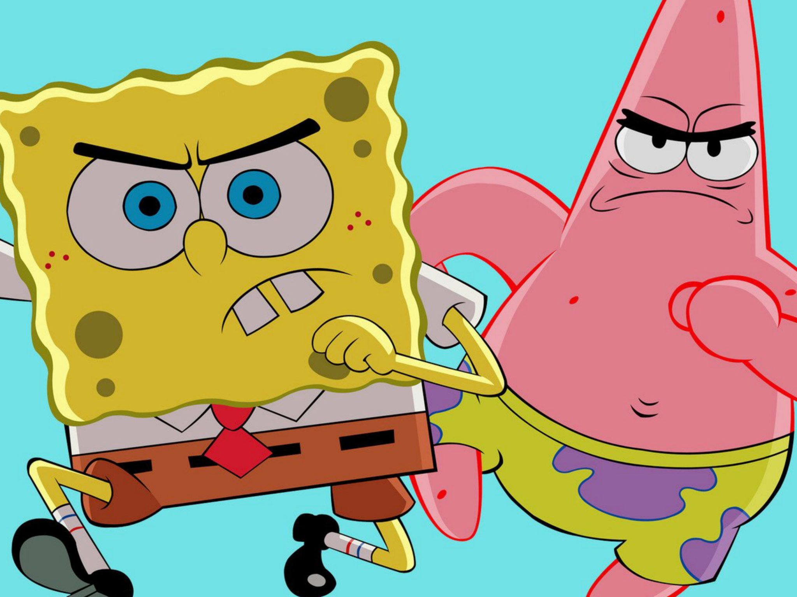
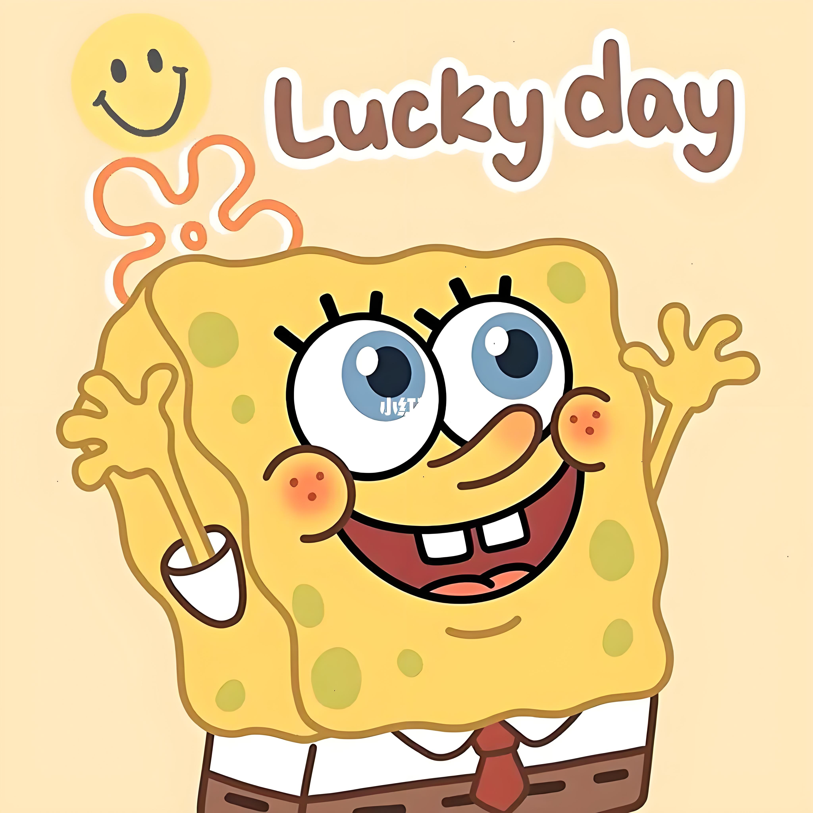
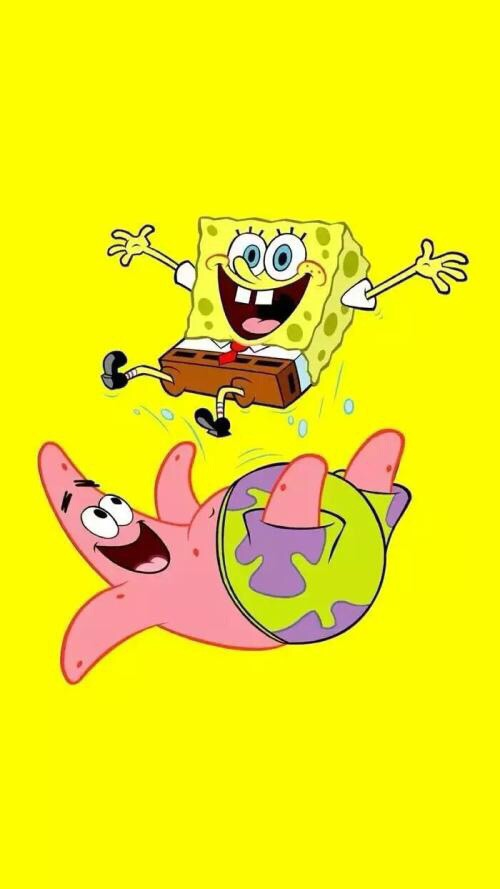

《海绵宝宝》（SpongeBob SquarePants）是一部由史蒂芬·海伦伯格原创，舍曼·科恩、沃特·杜赫、山姆·亨德森、保罗·蒂比特、沃尔特·道恩 [21]等导演，汤姆·肯尼、比尔·法格巴克、罗杰·布帕斯等配音的美国喜剧动画，于1999年7月17日在尼克国际儿童频道开播。
《海绵宝宝》的故事情节主要围绕着主角海绵宝宝和他的好朋友派大星、邻居章鱼哥、上司蟹老板等生物展开，场景设定于太平洋海底，一座被称为比基尼海滩的城市。2005年1月30日，该片荣获第32届安妮奖授予的“最佳TV动画制作”奖
这部动画除了固定描绘的卡通场景与人物之外，也会穿插一些真实的物件或人物：例如曾出演《海滩游侠》与《霹雳游侠》的大卫·哈塞尔霍夫，以本人的身份出演了几集。但海绵宝宝卡通的内容基本上与海洋知识无关，甚至夸大到完全不合乎科学与常识，例如海底生火、海底冲澡等，剧集内容也会时不时的嘲笑精致艺术和章鱼哥的劳工权益想法。
海绵宝宝是方块形的黄色海绵，住在比基尼海滩（裤头村、比奇堡）的一个菠萝里，他的宠物是一只会“猫~猫~”叫的海蜗牛小蜗，海绵宝宝喜欢捕捉水母，职业是蟹堡王（The Krusty Krab）里的头号厨师。派大星和珊迪都是他的朋友。海绵宝宝总是能给平静的世界制造麻烦，虽然闹出一些笑话，不过他总能摆脱困境，然后又制造出新的麻烦
粉红色的海星。智商极低，头脑与身体仅使用插头连结。做什么事都会搞砸，但开船却异常厉害，居住在圆顶石头底下。懒惰并相当孩子气，时常在无意间呆滞的流口水，且讨厌洗澡、也不爱洗手、偏爱睡觉。兴趣是看电视。跟海绵宝宝的交情最好；并时常鼓励海绵宝宝做出一些危险行动，往往让彼此陷入困境。
大鼻子章鱼，容易愤怒且势利眼，相当自恋，自以为拥有艺术才能。目前是光头，但曾有过黄色长卷发。居住在一栋仿复活节岛人像的房屋。担任"蟹堡王"的柜台人员，但并不喜欢自己的工作，喜欢吹奏竖笛及采用多种风格画自画像。讨厌海绵宝宝和派大星，偶尔会对海绵宝宝表达认同，但通常是对他自己有利的时候。
根据海绵宝宝的驾照，他的生日是1986年7月14日，贝壳街124号，体重为28克，他居住在自己的凤梨屋中，并担任当地著名快餐店"蟹堡王餐厅"厨师，他具有不死之身，即使身体如何被破坏皆可恢复原状。虽然有正常进食，但纯滤食海水也能继续存活。体力薄弱，且所谓的哑铃其实是绒毛玩具；但随著剧情发展逐渐提升
海绵宝宝的家是一个标志性的凤梨屋，位于珊瑚丛林中的一片空地上，从那里可以轻松地步行到他工作的地点——著名的蟹堡王餐厅。海绵宝宝担任该餐厅的主厨，每天都会精心制作招牌美食“美味蟹堡”，他对这份工作抱有极大的热情与自豪感，获得了无数的“本月最佳员工”奖项，这些奖杯都被整齐地摆放在家中一个特别定制的大壁橱里，海绵宝宝使用秘方制作出来的蟹黄堡，蟹老板照着配方，也无法做出美味的蟹黄堡，所以蟹堡王餐厅没有海绵宝宝就会倒闭，很多次蟹老板都是求着海绵宝宝回来上班
尽管海绵宝宝已经在泡芙阿姨的海底驾训班接受了长时间的学习，但他始终未能通过路考获得驾照。每次考试时，他总会变得异常紧张，导致无法正常发挥。然而，当他在开车时不看前方时，反而能驾驶得非常顺利，但海绵宝宝对此似乎并未意识到
在闲暇时光，海绵宝宝最喜欢做的事情就是和他的宠物小蜗一起玩耍。他们经常一起去珊瑚丛林中抓水母，或者是在家里吹泡泡。海绵宝宝还热衷于练习空手道